Quick Start¶
Contents
Creating a new project¶
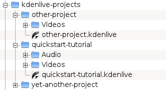{kind=link}
The first step is creating a new (empty) folder for our new project. I will call it quickstart-tutorial/ in this tutorial. Then get some sample video clips, or download them from here:` Archive File: kdenlive-tutorial-videos-2011-avi.zip <kdenlive-tutorial-videos-2011-avi.zip>`_
(7 MB) 1 , and extract them to e.g. a quickstart-tutorial/Videos/ subfolder inside the project folder.
The image on the left shows the suggested directory structure: Each project has its own directory, with video files in the Videos subdirectory, audio files in the Audio directory, etc. (projects_and_files)
(The tutorial from now on assumes that you use the sample videos provided, but it works with any.)
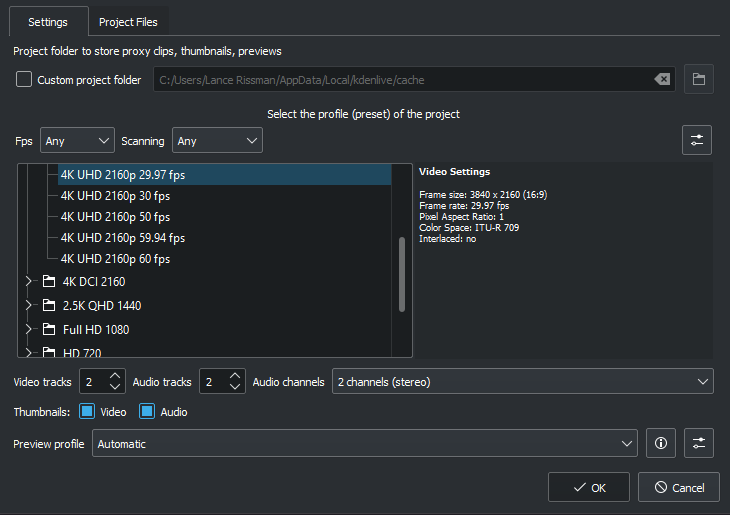{kind=link}
Open Kdenlive and create a new project .
Choose the previously created project folder (quickstart-tutorial/) and select an appropriate project profile. The video files provided above are 720p, 23.98 fps. 2 If you are using your own files and don’t know which one to use, Kdenlive will suggest an appropriate one when the first clip is added 3 , so you can leave the field on whatever it is.
If you like you can change to the dark theme: i.e Breeze-Dark
Adding clips¶
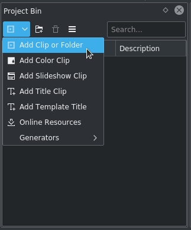Now that the project is ready, let’s start adding some clips (i.e. the ones you downloaded). This works via the Project Bin widget; a click on the icon directly opens the file dialog, a click on the small arrow shows a list of additional clip types that can be added as well. Video clips, audio clips, images, and other Kdenlive projects can be added via the default dialog.
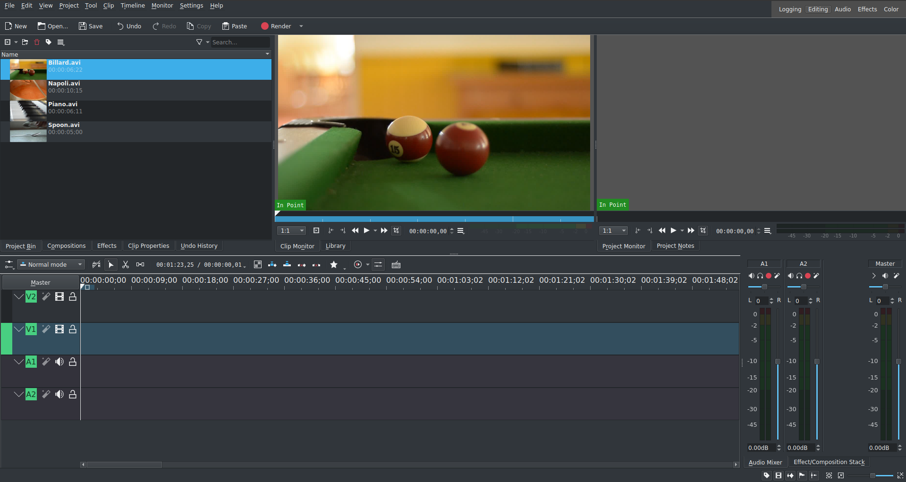{kind=link}
{kind=link}
After loading the clips, Kdenlive will look similar to this. On the top left there is the already known project tree. Right of it are the monitors that show video; The clip monitor displays video from the original clips, the project monitor shows how the output video will look, with all effects, transitions, etc. applied. The third, also very important, item is the timeline (below the monitors): This is the place where the video clips will be edited. There are two different types of tracks, Video and Audio. Video tracks can contain any kind of clip, audio tracks as well – but when dropping a video file to the audio track, only the audio will be used.
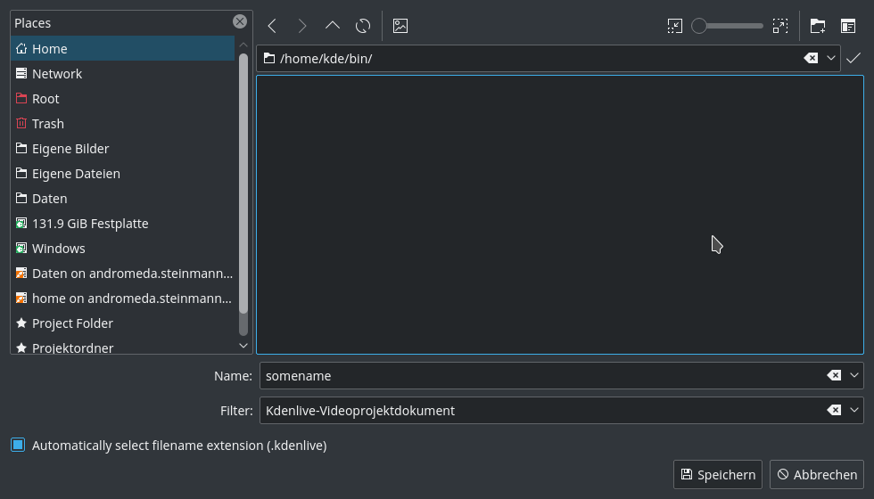{kind=link}
Let’s save the work via . This saves our project, i.e. where we placed the clips on the timeline, which effects we applied, and so on. It can not be played. 4 The process of creating the final video is called Rendering.
Timeline¶
See also timeline
Now comes the actual editing. Project clips are combined to the final result on the timeline. They get there by drag and drop: Drag some Napoli (assuming you are using the files provided above, as in the rest of this quick start tutorial; If not, please make sure your screen is waterproof, and perhaps tomatoproof) from the project tree, and drop it onto the first track in the timeline. In this case track V2.
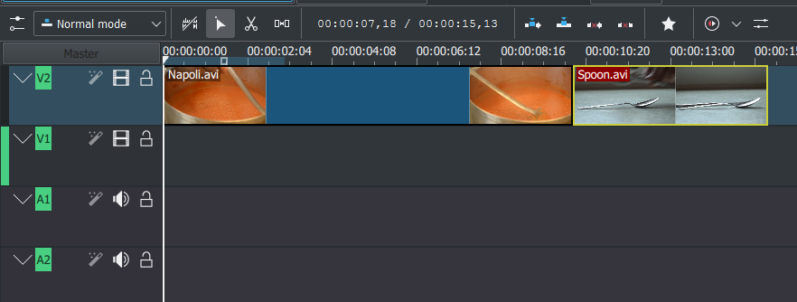{kind=link}
Since some cutlery is needed as well, grab the spoon clip and drop it on the first track as well (track V2). Then drag the Napoli to the beginning of the timeline (otherwise the rendered video would start with some seconds of plain black), and the Spoon right after the Napoli, such that it looks like in the image on the left. (Where I have zoomed in with Ctrl + Wheel.)
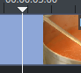The result can already be previewed by pressing Space (or the Play button in the project monitor). You will see the Napoli directly followed by a Spoon. If the timeline cursor is not at the beginning, the project monitor will start playing somewhere in the middle; you can move it by dragging it either on the timeline ruler or in the project monitor. If you prefer keyboard shortcuts, Ctrl + Home does the same for the monitor that is activated. (Select the if it is not selected yet before using the shortcut.)
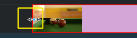Since after eating comes playing, there is a Billiards clip. Add it to the timeline as well (track V1). For the first 1.5 seconds nothing happens in the clip, so it should perhaps be cut to avoid the video becoming boring. An easy way 5 for this is to move the timeline cursor to the desired position (i.e. the position where you want to cut the video), then drag the left border of the clip when the resize marker appears. It will snap in at the timeline cursor when you move close enough.
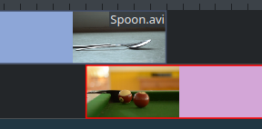To add a transition between eating (the Spoon) and playing billiards, the two clips need to overlap. To be precise: place the second clip above or below the first one. The first clip should end some frames after the second one begins. Zooming in until the ticks for single frames appear helps here; it also makes it easy to always have the same transition duration, five frames in this case.
You can zoom in by either using the at the bottom right corner of the Kdenlive window, or with Ctrl + Mousewheel. Kdenlive will zoom to the timeline cursor, so first set it to the position which you want to see enlarged, then zoom in.
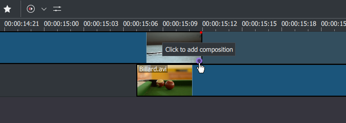{kind=link}
Now that the clips overlap, the transition can be added. This is done either by right-clicking on the upper clip and choosing and choose or, easier, by hovering the mouse over the lower right corner of the Spoon clip until the pointing-finger pointer is shown and the message “Click to add composition” appears. The latter, by default, adds a wipe transition, which is in this case the best idea anyway since the Spoon is not required for playing.
The wipe transitions fades the first clip into the second one. See also Transitions.
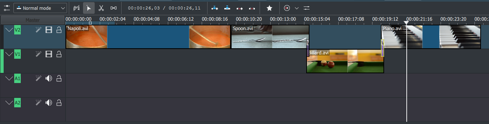{kind=link}
Let’s now add the last clip, the Piano, and again apply a wipe transition. When adding it on the first track of the timeline (track V2), you need to click on the new clip’s lower left edge to add the transition to the previous clip.
Effects¶
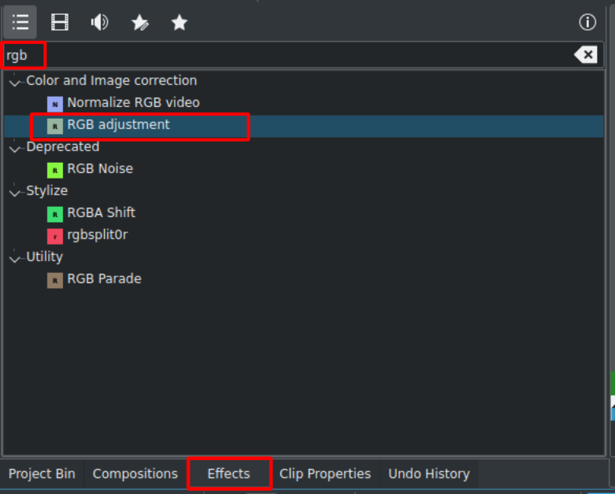The Piano can be colourized by adding an effect to it. Click on the effect view (if effect view is not visible enable the view: ). Type rgb in the search field then double-click the effect.
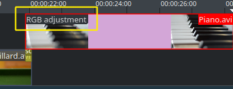{kind=link}
Once the effect has been added, click on an empty part in the timeline and you see its name on the timeline clip. It will also be shown in the widget.
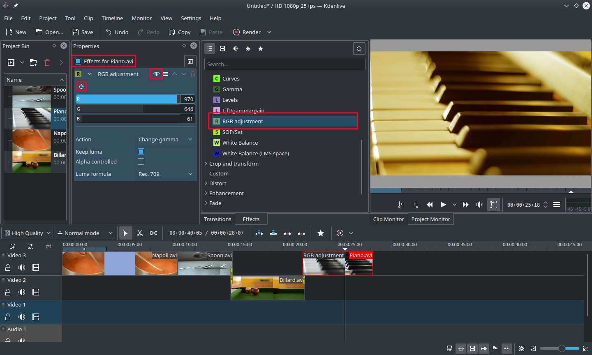{kind=link}
To get a warm yellow-orange tone on the image, fitting the comfortable evening, blue needs to be reduced and red and green improved.
The values in the Effect/Composition Stack widget can be changed by using the slider (middle mouse button resets it to the default value), or by entering a value directly by double-clicking the number to the right of the slider.
The Effect/Composition Stack widget always refers to the timeline clip that is currently selected. Each effect can be temporarily disabled by clicking the eye icon, or all effects for that clip can be disabled using the check box at the top of the Effect/Composition Stack widget (the settings are saved though), this is e.g. useful for effects that require a lot of computing power, so they can be disabled when editing and enabled again for rendering.
For some effects, like the one used there, it is possible to add keyframes. The framed watch icon indicates this. Keyframes are used for changing effect parameters over time. In our clip this allows us to fade the piano’s colour from a warm evening colour to a cold night colour.
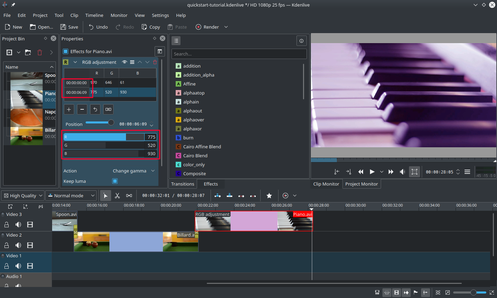{kind=link}
After clicking the icon (the clock icon framed in the previous image), the Properties widget will re-arrange. By default there will be two keyframes, one at the beginning of the timeline clip and one at the end. Move the timeline cursor to the end of the timeline clip, such that the project monitor actually shows the new colours when changing the parameters of the keyframe at the end.
Make sure the last keyframe is selected in the Properties list. Then you are ready to flood the piano with a deep blue.
Moving the timeline cursor to the beginning of the project and playing it (with Space, or the Play button in the ), the piano should now change the colour as desired.
Keyframing was the hardest part of this tutorial. If you managed to do it, you will master Kdenlive easily!
See also Effects.
Music¶
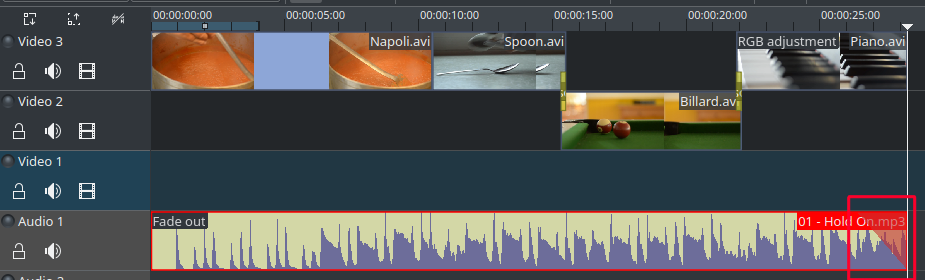{kind=link}
Since the clips do not provide any audio, let’s search for some nice piece of music, from your local collection or on web pages like Jamendo. The audio clip should, after adding it, be dragged to an audio track on the timeline.
The audio clip can be resized on the timeline the same way as video clips are. The cursor will snap in at the end of the project automatically. To add a fade out effect at the end of the audio clip (except if you found a file with exactly the right length) you can hover the top right (or left) edge of the timeline clip and drag the red shaded triangle to the position where fading out should start. 6
Rendering¶
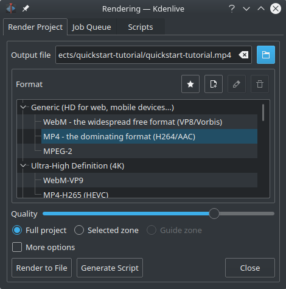{kind=link}
A few minutes left, and the project is finished! Click the Render button (or go to , or press Ctrl + Enter) to get the dialog shown on the left. Select the desired output file for our new video with all effects and transitions, choose MP4 (works nearly everywhere), select the output file location and press the button.
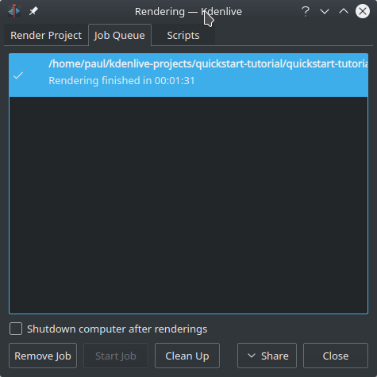{kind=link}
After some seconds rendering will be finished, and your first Kdenlive project completed. Congratulations!
References and notes¶
- 1
If you prefer Theora (which you probably don’t since Ogg Video usually causes problems), you can alternatively download kdenlive-tutorial-videos-2011-ogv.tar.bz2.
- 2
720 is the video height, p stands for progressive scan in contrast to interlaced video, and the fps number denotes the number of full frames per second.
- 3
Provided Configure Kdenlive Settings under Configure Kdenlive is set to Check if first added clip matches project profile
- 4
To be correct, it can be played using
melt yourproject.kdenlive, but this is not the way you would want to present your final video since it is (most likely) too slow. Additionally, it only works if melt is installed.- 5
Writing it this way suggests that there are several ways of cutting a clip. This is in fact true.
- 6
This shaded triangle is a shorthand for adding the effect . Both ways lead to the same result.